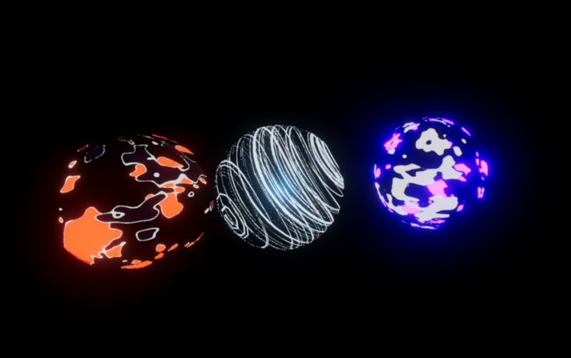

FX design

I was able to construct this site using the css framework BootStrap. Images you see throughout the site where taken by me and edited through photoshop to be more presentable. The css for these images where done by me for the most part, the only feature from brackets used was the flex box class names. The only image that was not of my own work was the image for the ColusSteam project, that thumbnail is a temporary image that is too be used as a place holder.
Too further differentiate my page from the Bootstrap framework I employed the typography from the Lora and Crimson text font. I also edited the icons used for various buttons on the page using symbols from awesome fonts. I also removed the functionality of the carousel that allowed it to change images at a set interval, I found that when left automated it shift the contents of the page too often.
For the above and beyond, I decided to use the modal feature of BootStrap to keep projects from taking too much space, while also providing a clear area for the user to read. It was a bit challenging to complete since the grid of the modals where a bit different than the actual screen size. As I stated before, I also edited photos for the site, and even designed my own logo that you can find as the brand in the navbar, and as the center item below the email form in the "Contact me" section.